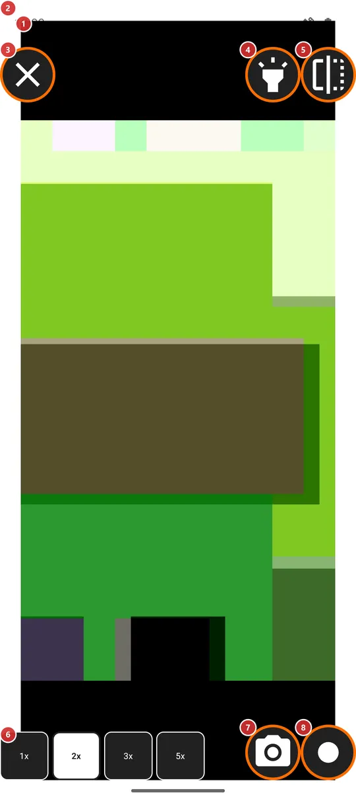
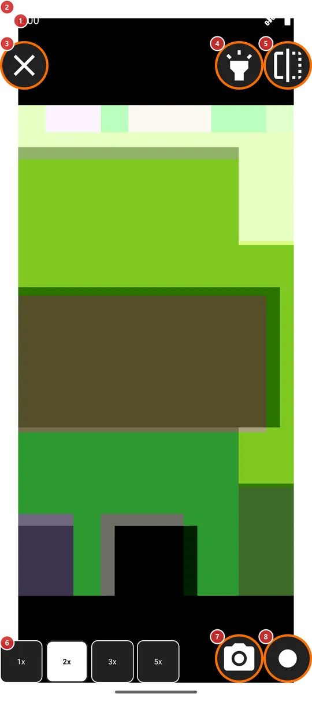

Дзеркало
Для чого цей екран
Дзеркало показує фронтальну камеру на весь екран усередині яскравого поля, що освітлює обличчя, як лампа навколо косметичного дзеркала. Стане в пригоді, щоб поправити обличчя чи зачіску і швидко зняти себе на фото або відео.


Порядок дій
- Відкрийте «Дзеркало» з меню програм, із панелі програм або ярликом запуску. На телефоні з фронтальною камерою воно ввімкнене за замовчуванням. Уперше дозвольте камеру, коли її попросять. Ваше зображення 1 з'явиться всередині яскравого поля 2.
- Виберіть, наскільки наблизитися, кнопками збільшення 6. Уперше дзеркало відкривається на 2x, потім - на останньому ступені, яким ви користувалися.
- Кнопкою «Фронтальний ліхтарик» 4 вмикайте й вимикайте яскраве поле, якщо світло надто сильне або не потрібне.
- Кнопка «Віддзеркалити зображення» 5 перемикає вигляд дзеркала і вигляд, яким вас бачать інші.
- Зробіть фото кнопкою 7 або почніть і зупиніть відео кнопкою 8. Під час першого відео буде запитано мікрофон.
- Натисніть «Закрити дзеркало» 3, коли закінчите. Камеру звільнено одразу.
Елементи
Зображення і світло
1Зображення дзеркалаВаше обличчя з фронтальної камери - так, як його показує справжнє дзеркало.
Фронтальна камера займає весь екран. Спершу зображення віддзеркалене по горизонталі, як у дзеркалі, тож ліве для вас залишається лівим. Поки дзеркало відкрите, екран не гасне.
Дозвіл на камеру запитується під час першого входу. Якщо ви відмовите, дзеркало закриється з повідомленням, що не може відкритися. На пристрої без фронтальної камери воно не відкриється зовсім.
2Яскраве полеБіла рамка навколо зображення, що підсвічує обличчя.
Поки підсвічування ввімкнене, вікно доводиться до повної яскравості, а біле поле навколо зображення працює як лампа навколо косметичного дзеркала. Підвищується лише яскравість цього вікна, а не налаштування яскравості телефона. Коли підсвічування вимкнене, поле зникає, і вікно повертається до звичної для телефона яскравості.
Кнопки в кутах
3Закрити дзеркалоВиходить із дзеркала й відпускає камеру.
Кнопка стоїть у лівому верхньому куті. Якщо триває запис відео, його зупиняють, і він усе одно зберігається. Збільшення, віддзеркалення та підсвічування запам'ятовуються до наступного разу.
4Фронтальний ліхтарикВмикає й вимикає яскраве біле поле, не виходячи з екрана.
За замовчуванням поле ввімкнене. Коли воно ввімкнене, вікно світить на повну яскравість, і обличчя освітлене; коли вимкнене, екран навколо зображення чорний, а телефон використовує звичайну яскравість. Вибір запам'ятовується. У кнопки така сама назва, як у програми «Фронтальний ліхтарик», бо поле - та сама ідея: екран як лампа.
5Віддзеркалити зображенняПеремикає вигляд дзеркала і вигляд, яким вас бачать інші.
Спершу ви бачите себе як у дзеркалі, з поміняними місцями лівим і правим боками. Натисніть кнопку, щоб побачити зображення навпаки, так, як камера показує вас іншим; натисніть ще раз, щоб повернутися. Змінюється лише те, що ви бачите: фото й відео зберігаються так, як їх знімає камера. Вибір запам'ятовується.
6Ступені збільшенняЧотири кнопки - 1x, 2x, 3x і 5x - наближають обличчя.
Активний ступінь виділено жирним шрифтом та інвертованими кольорами. Уперше дзеркало відкривається на 2x, потім - на останньому використаному ступені. На більшості фронтальних камер усі ступені вище за 1x цифрові, тож зі зростанням числа зображення стає грубішим. Збільшення зберігається, коли ви починаєте запис.
Фото і відео
7Зробити фотоЗнімає фото того, що бачить фронтальна камера.
Фото зберігається в теку, яку ви вибрали для фото вбудованої камери. Якщо теку не вибрано або вибраний ресурс - не тека на пристрої, фото потрапляє в теку «Камера» телефона. Коротке повідомлення підтверджує збереження. Поки знімок зберігається, кнопка неактивна, тож подвійне натискання не зашкодить. Фото, зняте з повернутим набік телефоном, зберігається в правильній орієнтації.
8Записати відеоПочинає й зупиняє запис відео з фронтальної камери.
Перше натискання починає запис, а кнопка перетворюється на значок запису; натисніть ще раз, щоб зупинити. Під час першого запису запитується мікрофон; якщо ви відмовите, відео запишеться без звуку. Після зупинки кнопка на мить чекає, поки файл буде завершено, а потім повідомлення підтверджує збереження. Відео потрапляє в теку, вибрану для запису відео, або в теку «Камера» телефона, якщо теку не вибрано або вибраний ресурс - не тека на пристрої.